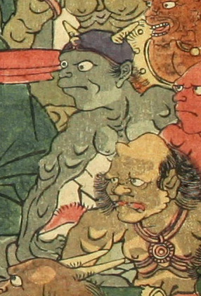

2本の角をもつ灰色の肌の鬼。鬼の舞いを見物している。頭に紺色の布を巻き、布に開いた穴から角がつき出している。
著作者：一栄斎芳艶（歌川芳艶）／出典：親書誌：U426_nichibunken_0086：丹波國大江山之圖；タンバノクニオオエヤマノズ／日付：2007／資源識別子：U426_nichibunken_0086_0005_0007
Copyright (c)2010- International Research Center for Japanese Studies, Kyoto, Japan. All rights reserved.